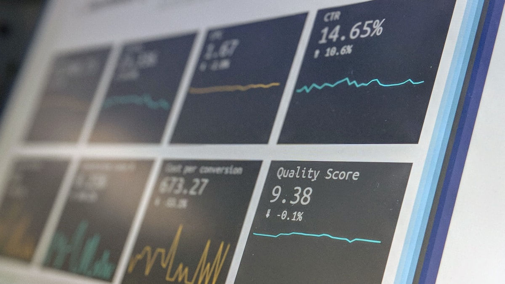
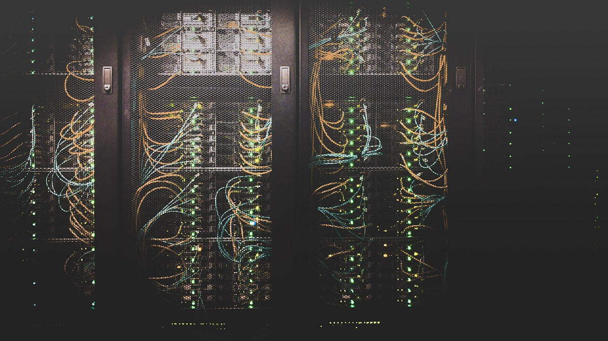

CNNs and the Basics of Image Processing: How Does a Machine "See" an Image?
An intuitive guide to CNNs through filters, convolution, pooling and layers: how a machine actually parses and "sees" an image, with a short code sketch.
ReadFrom RNNs and LSTMs to the Transformer: The Evolution of Sequence Architectures
An intuitive guide to the evolution of sequence architectures: how RNNs work, their limits like vanishing gradients and the inability to parallelize, the gates of the LSTM, and why attention won out with the Transformer.
ReadOverfitting and Regularization: Why Models Memorize Instead of Learn
Why do models memorize? An intuitive guide to overfitting and regularization: dropout, L1/L2, early stopping, and cross-validation explained with everyday examples.
Read
Gradient Descent and Optimization: How Does a Model "Learn"?
An intuitive walk through gradient descent via the loss function, learning rate, SGD and Adam: how does a model really "learn" by measuring and reducing its error?
Read
Classification Metrics: When to Use Accuracy, Precision, Recall, F1, and ROC-AUC
Starting from the confusion matrix, we explain accuracy, precision, recall, F1, and ROC-AUC through everyday examples and clarify which metric is the right choice and when.
Read
Unsupervised Learning and Clustering: Finding Patterns in Unlabeled Data
An intuitive guide to unsupervised learning through k-means, hierarchical clustering and PCA: how to extract hidden patterns from unlabeled data and choose the number of clusters.
Read
Feature Engineering: Meaningful Signals from Raw Data and the Leakage Traps
An intuitive guide to feature engineering: deriving meaningful features from raw data, scaling, encoding, and the data-leakage traps that make models collapse in production.
Read
Model Interpretability (XAI): Why Did a Model Decide That Way?
An intuitive guide to SHAP, LIME, and attention visualization: why a model decides the way it does, and how these explanations strengthen trust and accountability.
ReadSynthetic Data Generation: Overcoming Scarcity, Protecting Privacy, and Avoiding Model Collapse
Synthetic data is generated data that imitates the patterns of reality. We explain, with intuitive examples, how it overcomes data scarcity, protects privacy, how LLMs generate it, and the risk of model collapse.
ReadModel Monitoring and Drift in Production: Concept Drift, Performance Decay, and Retraining Triggers
A practical guide to data and concept drift in production ML models: detecting performance decay, retraining triggers, and keeping your production ML healthy.
ReadThe Attention Mechanism, Intuitively: Query, Key, Value, Self-Attention, and Why It Was Revolutionary
When a model understands a word, which words does it "look at"? An intuitive guide to Query-Key-Value, self-attention, and the Transformer revolution.
Read
Tokenization and the Challenges of Turkish: Agglutination, Vocabulary Explosion, and Efficient Tokenization
Why does Turkish consume more tokens? Agglutination, vocabulary explosion, BPE and SentencePiece, and how efficient tokenization affects cost and speed.
ReadEmbedding Models and Semantic Similarity: Vectors That Turn Text Into Meaning
An intuitive guide to turning text into vectors, cosine similarity, choosing an embedding model, and multilingual embeddings, with everyday analogies and a short code example.
Read
Chunking Strategies for RAG: How Splitting Decides Quality
RAG chunking strategies: fixed size, sentence/paragraph, overlap, semantic chunking, and preserving heading context. How splitting affects quality, explained intuitively.
ReadReranking and Hybrid Search: Combining BM25 with Semantic Search
An intuitive guide to hybrid search blending BM25 and semantic search, score fusion with RRF, and reranking with a cross-encoder, with short code examples.
ReadThe Context Window and Long Documents: Token Limits, Lost in the Middle, Long Context vs RAG
What is a context window? Token limits, the "lost in the middle" problem, long context vs RAG, and summarization chains (map-reduce, refine) explained with intuitive analogies.
Read
LLM Agents and Tool Use: Planning, MCP, and Multi-Step Tasks
How do LLM agents call tools, plan, and run multi-step tasks? We explain MCP, the opportunities, and the risks with plain, everyday analogies.
Read
Knowledge Graph + RAG (GraphRAG): Retrieval That Captures Relationships
GraphRAG: retrieval that combines a knowledge graph with RAG. Connections between entities, multi-hop and global questions, and closing classic RAG's gaps, explained intuitively.
ReadModel Inference and Scaling: Cutting GPU Costs with Latency, Throughput, Quantization and the KV-Cache
A practical guide to latency, throughput, quantization, KV-cache and batching, with everyday analogies, focused on lowering the cost of GPU inference.
ReadData Quality and Labeling: A Model's Real Fuel
Garbage in, garbage out: data cleaning, labeling strategies, synthetic data, and honest evaluation sets that make up a model's real fuel.
Read
Who is Halide Yılmaz?
A short story of the founder.
Read
How did EcoFluxion come about?
How EcoFluxion began with a simple question and why it builds its own products.
Read
What is İçtiHub?
An AI platform for legal professionals: case-law search and document analysis.
Read